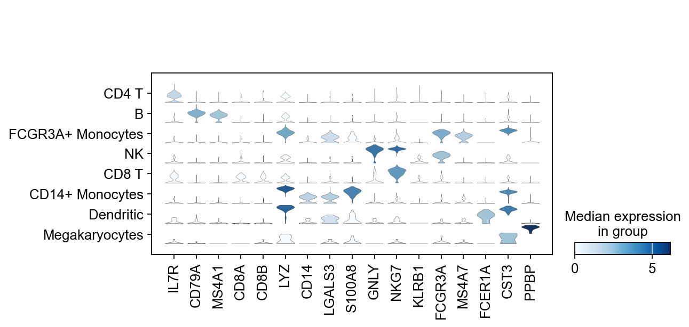
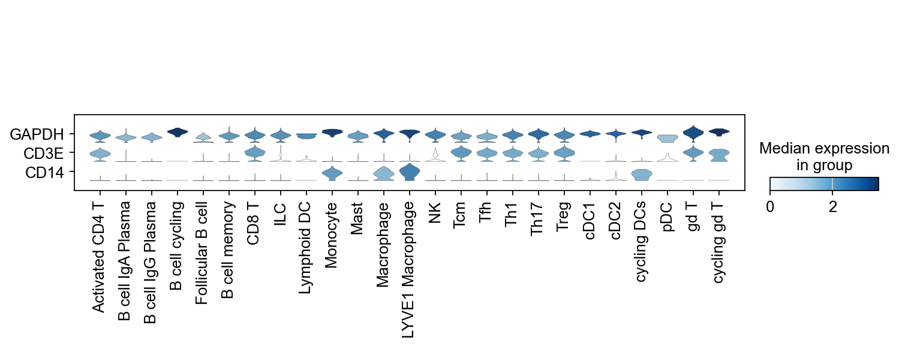
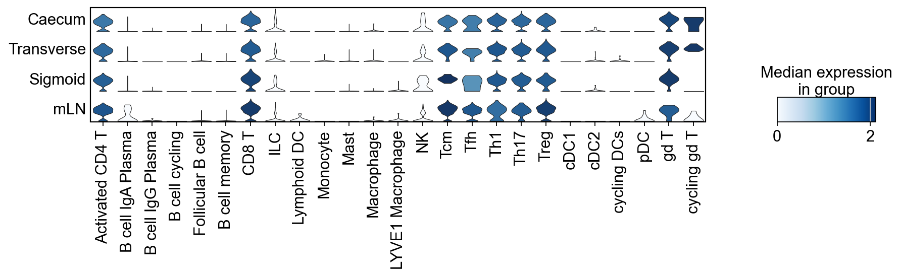

single cell解析における遺伝子発現量の可視化

Contents
目的
- scanpyでsingle cellの解析を行う際、遺伝子の発現量を見るとき、sc.pl.stacked_violinを用いて、以下の画像のように細胞タイプごとのさまざまな遺伝子の発現量の比較が可能です。

- 普段、研究室に所属して研究に協力させていただいてるのですが、研究室で「特定の遺伝子について臓器間でセルタイプごとに発現量が異なるかを可視化する方法はないか」と質問されて、調べてみたものの既存の関数では対応できず困っていました。
- 実際、異なる遺伝子間の発現量の比較を行うために、複数の遺伝子を引数にとることができる関数（sc.pl.stacked_violin）は存在しますが、一つの遺伝子に着目して色々な角度から発現量を可視化したい場合、複数のobsを引数にとる関数が用意されていないため、実装してみました。
- 本コードを使うことで、例えば、臓器によって、それぞれの細胞タイプでの、ある遺伝子(GAPDHなど)の発現量がどのように変わるかを可視化することが可能となり、複数の軸から発現量を見える化できます。
- 具体的に解析対象として、Colon Immune Atlasの腸管免疫細胞のデータを用いて、実装してみました。
データの概要
- データセット : 5人のdonorからの大腸免疫細胞（41,650細胞）
- region : 大腸から採取されたサンプルは、盲腸（cecum）、横行結腸（transverse colon）、S状結腸（sigmoid colon）、および腸間膜リンパ節（MLNs）の4つの場所から取得されています。
- cell_type : 細胞はB細胞、Th1細胞など25の細胞タイプにクラスタリングされています。
sc.pl.stacked_violinで可視化
- 以下の図の通り、複数の遺伝子を引数にとり、クラスタ－ごとの発現量を見ることはデフォルトの関数で実装可能です。
細胞タイプごとの様々な遺伝子の発現量の違い
sc.pl.stacked_violin(adata,['GAPDH','CD3E','CD14'],groupby='cell_type',swap_axes=True)

作成コード
条件
関数を作成するに当たって、主に公式のコードに従って、以下のように設定しています。
- カラーバーは発現量は、バイオリンの中央値のデータを参照して、発現量の中央値の大きさによって色づける。
- データがない場合や発現量が負の場合は、発現量が0として可視化する。
- 図のサイズは、x軸、y軸のサイズに従って大きさが変更するように設定する。
コード
import matplotlib.pyplot as plt
import pandas as pd
import numpy as np
import seaborn as sns
import matplotlib.colors as mcolors
import matplotlib.patches as patches
from matplotlib.gridspec import GridSpec
from anndata import AnnData
class CustomStackedViolin:
"""
A class to create stacked violin plots for visualizing gene expression data across different categories.
Attributes:
adata (AnnData): An annotated data matrix of shape n_obs × n_vars. Rows correspond to cells and columns to genes.
gene (str): The name of the gene for which the expression data is plotted.
obs1 (str): The first observation category in the AnnData object to group the data by.
obs2 (str): The second observation category in the AnnData object to group the data by.
data (DataFrame): The prepared data for plotting, containing the gene expression values and observation categories.
"""
def __init__(self, adata: AnnData, gene: str, obs1: str, obs2: str):
"""
Initializes the CustomStackedViolin with the data and parameters for plotting.
Parameters:
adata (AnnData): The annotated data matrix.
gene (str): The gene of interest.
obs1 (str): The first observation category for grouping.
obs2 (str): The second observation category for grouping.
"""
self.adata = adata
self.gene = gene
self.obs1 = obs1
self.obs2 = obs2
self.prepare_data()
def prepare_data(self):
"""
Prepares the data for plotting by extracting gene expression values and merging with observation categories.
"""
# Extract gene expression data for the specified gene and ensure non-negative values
gene_data = self.adata[:, self.adata.var_names == self.gene].X.toarray().flatten()
gene_data = np.clip(gene_data, 0, None)
# Prepare the DataFrame for plotting
data = pd.DataFrame({
"obs1": self.adata.obs[self.obs1],
"obs2": self.adata.obs[self.obs2],
"gene": gene_data
})
# Create a DataFrame of all possible combinations of obs1 and obs2
all_combinations = pd.MultiIndex.from_product([self.adata.obs[self.obs1].unique(), self.adata.obs[self.obs2].unique()], names=["obs1", "obs2"])
all_combinations_df = pd.DataFrame(index=all_combinations).reset_index()
# Merge with all possible combinations to ensure every group is represented in the plot, even if it has no data
full_data = all_combinations_df.merge(data, on=["obs1", "obs2"], how='left')
full_data["gene"].fillna(0, inplace=True)
self.data = full_data
self.n1 = len(self.adata.obs[self.obs1].unique())
self.n2 = len(self.adata.obs[self.obs2].unique())
self.vmax = self.data.groupby(['obs1', 'obs2'])['gene'].median().max()
self.categories = self.data['obs1'].unique()
self.genes = self.data['obs2'].unique()
def plot(self):
"""
Plots the stacked violin plot visualizing the distribution of gene expression values across the specified categories.
"""
# Set figure size dynamically based on the number of categories, with specific adjustments for clarity and spacing
fig = plt.figure(figsize=((self.n1*0.5+2), (pow(self.n2*0.5, 0.9))))
# Configure grid layout to accommodate plots and colorbar with specified width ratios for balance
gs = GridSpec(len(self.genes), 2, width_ratios=[self.n1*0.5, 2])
norm = mcolors.Normalize(vmin=0, vmax=self.vmax)
cmap = plt.cm.Blues
# Create a violin plot for each gene
for i, gene in enumerate(self.genes):
ax = fig.add_subplot(gs[i, 0])
gene_data = self.data[self.data['obs2'] == gene]
median_expr = gene_data.groupby('obs1')['gene'].median()
colors = cmap(norm(median_expr.values))
sns.violinplot(x='obs1', y='gene', data=gene_data, ax=ax, inner=None, cut=0, scale='width', palette=colors, linewidth=0.5)
# Adjust Y-axis limits for gene data with no variation (only zeros)
# This ensures the plot remains visible and interpretable, even when there's no gene expression
if gene_data['gene'].nunique() == 1 and gene_data['gene'].iloc[0] == 0:
ax.set_ylim(-0.1, 1)
else:
pass
ax.set_ylabel(gene, rotation=0, ha='right', va='center')
ax.set_xlabel('')
ax.set_xticks([])
ax.set_yticks([])
ax.spines['left'].set_visible(False)
ax.spines['right'].set_visible(False)
ax.spines['top'].set_visible(False)
ax.spines['bottom'].set_visible(False)
if isinstance(self.categories, pd.Categorical):
categ = list(self.categories.categories)
else:
categ = list(self.categories)
if i == len(self.genes) - 1:
ax.set_xticks(np.arange(len(categ)))
ax.set_xticklabels(categ, rotation=90)
ax.spines['bottom'].set_visible(True)
# Add a colorbar to the plot
cbar_ax = fig.add_subplot(gs[-1, -1])
sm = plt.cm.ScalarMappable(cmap=cmap, norm=norm)
sm.set_array([])
cbar = plt.colorbar(sm, cax=cbar_ax, orientation='horizontal')
cbar.ax.set_title('Median expression\nin group', loc='center', pad=2)
plt.tight_layout()
plt.subplots_adjust(right=0.85)
# Frame around the plot
fig = plt.gcf()
lower_limit = fig.axes[-2].get_position().ymin
upper_limit = fig.axes[0].get_position().ymax
left_limit = fig.axes[0].get_position().xmin
right_limit = fig.axes[-2].get_position().xmax
frame_height = upper_limit - lower_limit
frame_width = right_limit - left_limit
frame = patches.Rectangle((left_limit, lower_limit), width=frame_width, height=frame_height,
transform=fig.transFigure, clip_on=False, edgecolor="black", linewidth=1, fill=False)
fig.patches.append(frame)
plt.show()
def custom_stacked_violin(adata: AnnData, gene: str, obs1: str, obs2: str):
"""
Convenience function to create and plot a CustomStackedViolin.
Parameters:
adata (AnnData): The annotated data matrix.
gene (str): The gene of interest.
obs1 (str): X-axis of the category for grouping.
obs2 (str): Y-axis of the category for grouping.
"""
plotter = CustomStackedViolin(adata, gene, obs1, obs2)
plotter.plot()
使用例
- "gene"に着目したい遺伝子、"obs1"に横軸に設定したいクラスター、"obs2"に縦軸に設定したいクラスターを設定します。
臓器間での細胞タイプごとの発現量の違い
custom_stacked_violin(adata, gene = 'CD3E', obs1 = 'cell_type', obs2 = 'region')

臓器間でのドナーごとの発現量の違い
custom_stacked_violin(adata, gene = 'CD3E', obs1 = 'donor', obs2 = 'region')
まとめ
- 解析を進める中で、着目した遺伝子の発現量を、疾患の有無、臓器別でみたい場面は多々あったので、今後解析ツールとして使っていきたいです。
- 普段、scanpyはツールとして使うのみだったので、ソースコードを少しでも見る機会ができ、可視化する前にどういう処理がされているのかを理解するきっかけとなり、勉強になりました。
- 本コードは自己責任で自由に使っていただいて問題ありません。データによってはうまく動かない場合などあると思いますが、ご容赦ください。
- 本コードはpython会内のプラットフォームで質問をして、岸くんがアイディアをくれたところから作成することとなりました。python会では、定期的に勉強会をするなど、バイオインフォマティクスについても積極的に活動しております。
参考文献
- James, K.R., Gomes, T., Elmentaite, R. et al. Distinct microbial and immune niches of the human colon. Nat Immunol 21, 343–353 (2020). https://doi.org/10.1038/s41590-020-0602-z
- stacked_violin_plot
- Preprocessing and clustering 3k PBMCs
- 前の記事 : 5年次研究留学 @ ハーバード大学
- 次の記事 : CodeQUEEN2024
- 関連記事 :